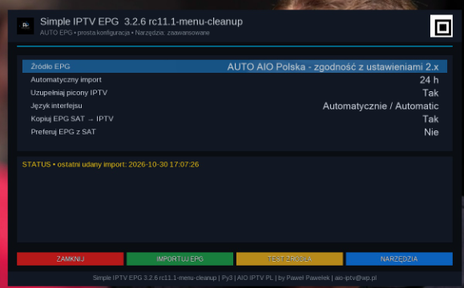

Projekt Paweł Pawełek | AIO Team
30 października 2026 • Enigma2 • Python 2 / Python 3
Simple IPTV EPG 3.2.6 RC11.1
Aktualizacja dla IPTV: pełniejsze mapowanie XMLTV, prawdziwe picony kanałów, rozpoznawanie referencji z bukietów i pamięci Enigma2, status pracy w tle oraz języki polski i angielski.

Aktualne wydanie
Wersja pakietu: 3.2.6-rc11.1-menu-cleanup
Data wydania: 30.10.2026
Platforma: Enigma2 (Python 2 / Python 3; zgodność zależy od image)
Plik: enigma2-plugin-extensions-simpleiptvepg_3.2.6-rc11.1_all.ipk
Rozmiar: 98.2 KB (100 510 bajtów)
SHA-256: 0d737ca979f94b54eb55388ee5b309f714dc721066c89e0a7f1bae9ad4110abe
Autor: Paweł Pawełek | AIO Team
Ustawienia po instalacji
- Źródło EPG: AUTO AIO Polska (zgodność z ustawieniami 2.x).
- Automatyczny import: co 24 godziny.
- Uzupełnianie piconów IPTV: Tak, prawdziwymi logotypami.
- Język interfejsu: automatyczny, Polski lub English.
- Kopiuj EPG SAT → IPTV: w nowej instalacji domyślnie Tak; „Preferuj EPG z SAT” — Nie. Zmień według własnych potrzeb.
Ustawienia starszej instalacji mogą zostać zachowane przy aktualizacji. Kopiowanie SAT → IPTV nie oznacza usuwania przewodnika satelitarnego.
Co zmieniło się w RC6–RC11.1?
- PL/EN i status: automatyczny lub ręczny wybór języka, komunikaty pobierania, mapowania i importu również po ponownym otwarciu wtyczki.
- Referencje IPTV: porównywanie danych z plików bukietów i pamięci Enigma2; łączenie wariantów tego samego URL bez mieszania różnych strumieni o identycznej nazwie.
- XMLTV: większy zasięg źródeł, w tym pełny przewodnik EPG.PW jako dodatkowe źródło AUTO; zoptymalizowane indeksowanie dużych plików.
- Picony: zamiast tekstowych atrap pobierane są rzeczywiste logotypy, gdy są dostępne. Wcześniejsze atrapy RC8 mogą zostać zastąpione; nie ma automatycznego usuwania piconów.
- Diagnostyka: liczby i raporty referencji z plików i pamięci, dopasowania, źródła, rozbieżności DVB i przypomnienie o restarcie GUI po naprawie list.
- RC11.1: usunięto z menu Narzędzia pozycję „Usuń picony zastępcze RC8”; pozostały mechanizmy EPG i prawdziwych piconów.
Ważne: standardowy import nie edytuje bukietów. Opcjonalne naprawy referencji wymagają osobnej decyzji użytkownika; po naprawie może być potrzebny restart GUI. Samo pobranie źródła XMLTV nie gwarantuje EPG dla każdego kanału.
Pobieranie i mapowanie EPG w tle
Po włączeniu IMPORTUJ EPG możesz zamknąć ekran wtyczki i nadal korzystać z tunera. Status zadania można sprawdzić po ponownym otwarciu wtyczki; czas operacji zależy od tunera, liczby kanałów IPTV i wielkości XMLTV.
Nie uruchamiaj ponownie interfejsu Enigma2 podczas importu. Przy pełnym źródle XMLTV wtyczka sprawdza wolną przestrzeń w /tmp (co najmniej 90 MiB przed pobraniem dużego przewodnika).
Zrzut ekranu i starsze przykłady
Aktualny ekran pochodzi z RC11.1 (30.10.2026). Pozostałe zdjęcia są archiwalnymi przykładami RC5 i nie stanowią potwierdzenia pokrycia EPG w najnowszym wydaniu.


Instalacja i aktualizacja
Skopiuj IPK do /tmp, a następnie zainstaluj poleceniem poniżej. Możesz też użyć instalatora online z repozytorium SimpleIPTV_EPG — pobierana przez niego wersja może różnić się od pliku dostępnego na tej stronie.
wget -qO - https://raw.githubusercontent.com/OliOli2013/SimpleIPTV_EPG/main/installer.sh | /bin/shopkg install /tmp/enigma2-plugin-extensions-simpleiptvepg_3.2.6-rc11.1_all.ipkW zależności od obrazu Enigma2 i sposobu instalacji może być potrzebne ponowne uruchomienie GUI. Nie każdy kanał ma wiarygodne źródło XMLTV ani dostępny picon.